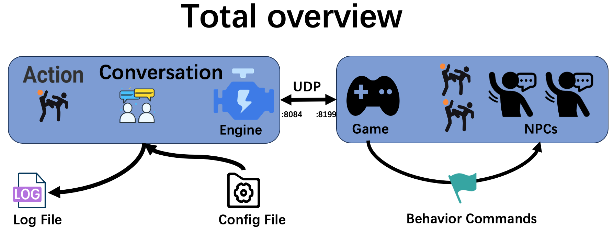

📜引擎使用说明

npc_engine的开发流程
1.1 引擎配置
在使用之前，开发者需要更新维护引擎的配置文件，配置文件位于npc_engine/Config文件夹中，包括：
- OpenAI API的配置文件: src/config/openai_config.json
- 动作配置文件: src/config/action/your_action_XXX.json
- NPC配置文件: src/config/npc/your_npc_nameXXX.json
- 场景配置文件: src/config/knowledge/scenes/your_scenario_nameXXX.json
1.2 引擎启动
引擎可以使用对应平台的运行脚本(windows下是.bat)或者手动使用python src/engine.py运行。
1.3 引擎交互
引擎端和游戏端通过UDP数据包按照UDP数据包格式进行交互，引擎端默认在8199端口监听游戏端数据包，游戏端默认在8084端口监听引擎端数据包。
1.4 引擎关闭
游戏端通过发送“close”功能数据包给引擎端来请求关闭引擎（详见数据包）。
✨配置文件结构
2.1 项目目录结构
- python_lib(依赖库)
- code(项目代码)
- npc-engine\
- logs(运行日志)
- src(源代码)
- config(配置文件)
- action(场景中允许的动作配置文件)
- chat.json(自定义第一个动作的配置文件)
- ...
- npc(npc描述配置文件)
- 村长.json(自定义第一个角色的配置文件)
- ...
- knowledge(知识、场景配置文件)
- scenes(子场景配置文件)
- 警察局.json(自定义第一个具体场景的配置文件)
- ...
🎒UDP数据包
3.1 场景初始化数据包
在引擎初始化或者加载一个新场景的时候，游戏端需要先发送init数据包给引擎端。引擎端才会加载指定场景的NPC。
# 场景初始化的包
{
"func":"init", # 表示该传送的数据包是用于加载场景
# 必填字段
"scene_name":"雁栖村", # 加载场景的名称，代表在什么场景下初始化
"language":"C", # 选择语言版本，“E”表示英文，“C”表示中文。默认且推荐使用中文。
# 🉑️选字段
"npc":[
{
"name":"李大爷",
"desc":"是个好人",
"npc_state": {
"position": "李大爷家",
"observation": {
"people": ["王大妈", "村长", "隐形李飞飞"],
"items": ["椅子#1","椅子#2","椅子#3[李大爷占用]","床"],
"locations": ["李大爷家大门","李大爷家后门","李大爷家院子"]
},
"backpack":["黄瓜", "1000元", "老报纸"]
},
"mood":"正常",
"memory":[ ]
},
{
"name":"王大妈",
"desc":"是个好人",
"npc_state": {
"position": "李大爷家",
"observation": {
"people": ["李大爷", "村长", "隐形李飞飞"],
"items": ["椅子#1","椅子#2","椅子#3[李大爷占用]","床"],
"locations": ["李大爷家大门","李大爷家后门","李大爷家院子"]
},
"backpack":["优质西瓜", "大砍刀", "黄金首饰"]
},
"mood":"焦急",
"memory":[ ]
}], # 可以留空，默认按照gscene.json初始化场景NPC。非空则在之前基础上添加。
}
3.2 引擎关闭数据包
在游戏结束的时候，engine需要一个close数据包，用于更新所有NPC的状态到json文件中。
# 引擎关闭的包
{
"func":"close" # 关闭引擎,并保存所有NPC到json
}
3.3 NPC的动作数据包
NPC不会开始自主行动，除非你发送了wakeup包给它。 npc-engine接到wakeup包之后，会返回action行为数据包。 游戏端需要执行对应action，执行最终状态以action_done的形式返回给npc-engine engine接收到action_done包之后会继续返回action行为包。

# wakeup包例：
{
"func":"wake_up",
"npc_name": "王大妈",
"scenario_name": "李大爷家",
"npc_state": {
"position": "李大爷家卧室",
"observation": {
"people": ["李大爷", "村长", "李飞飞"],
"items": ["椅子#1","椅子#2","椅子#3[李大爷占用]","床"],
"locations": ["李大爷家大门","李大爷家后门","李大爷家院子"]
},
"backpack":["优质西瓜", "大砍刀", "黄金首饰"]
},
"time": "2021-01-01 12:00:00", # 游戏世界的时间戳
}
# action_done包例
{
"func":"action_done",
"npc_name":"王大妈",
"status": "success",
"time": "2021-01-01 12:00:00", # 游戏世界的时间戳
"scenario_name": "李大爷家",
"npc_state": {
"position": "李大爷家卧室",
"observation": {
"people": ["李大爷", "村长", "李飞飞"],
"items": ["椅子#1","椅子#2","椅子#3[李大爷占用]","床"],
"locations": ["李大爷家大门","李大爷家后门","李大爷家院子"]
},
"backpack":["优质西瓜", "大砍刀", "黄金首饰"]
},
"action":"mov",
"object":"李大爷家", # 之前传过来的动作对象
"parameters":[], # 之前传过来的参数
"reason": "", # "王大妈在去往‘警察局’的路上被李大爷打断"
}
# action_done、wakeup发给游戏包后返回的ACTION包
{
"name":"action",
"npc_name":"李大妈",
"action":"mov",
"object":"李大爷家",
"parameters":[],
}
3.4 对话相关行为
游戏需要自己确认npc的群体对话触发机制，通常是一个包含固定半径的对话房间。 发送create_conversation给engine后，engine会根据提供的参数返回一个长剧本包，游戏需要自己实现剧本演出。 每一行剧本演出完成后，需要发送确认包给engine否则不会有记忆。
剧本有插入功能，比如玩家要插入对话或者一个新的npc进入了对话，这时候发送re_create_conversation包(带着之前的对话ID)便可，会重新生成一个考虑到插入npc的接续剧本。

# create_conversation游戏端发给引擎的包
{
"func": "create_conversation",
"npc": ["王大妈","李大爷"], # npc列表
"scenario_name": "李大爷家",
"location": "李大爷家卧室",
"topic": "王大妈想要切了自己的西瓜给李大爷吃，并收钱", # 可以留空，会自动生成topic
"npc_states": [ # 该列表中的每个状态对应于npc列表的相应角色名称
{
"position": "李大爷家",
"observation": {
"people": ["李大爷", "村长", "隐形李飞飞"],
"items": ["椅子#1","椅子#2","椅子#3[李大爷占用]","床"],
"locations": ["李大爷家大门","李大爷家后门","李大爷家院子"]
},
"backpack":["优质西瓜", "大砍刀", "黄金首饰"]
},
{
"position": "李大爷家",
"observation": {
"people": ["王大妈", "村长", "隐形李飞飞"],
"items": ["椅子#1","椅子#2","椅子#3[李大爷占用]","床"],
"locations": ["李大爷家大门","李大爷家后门","李大爷家院子"]
},
"backpack":["黄瓜", "1000元", "老报纸"]
},
],
"starting": "你好，嫩们在干啥腻？", # 玩家说的话，可选留空
"player_desc": "玩家是一个疯狂的冒险者，喜欢吃圆圆的东西", # 玩家的描述，可选留空
"memory_k": 3, # npc的记忆检索条数，必须填写
"length": "M" # 可以选择的剧本长度，S M L X 可选。
}
# 引擎端创造并生成剧本后传给游戏端的数据包
{
"name": "conversation",
"id": "123456789", # conversation对象的索引号
"length": "M", # 可以选择的剧本长度，S M L X 可选。
"location": "李大爷家", # 对话发生所在的地点
"lines": [line1, line2, line3, line4, ...] # 剧本信息，由若干行对话组成的序列
}
# 引擎端生成剧本的每一行的格式
{
"type": "Interaction", # 剧本行的类型，可以是State，Interaction，Error
"state": "李大爷退出。剩下的角色：王大妈", # 当剧本行类型是State和Error时，"state"才会有具体内容
"name": "李大爷", # 剧本行对应的角色姓名，当剧本行类型是Interaction时才不为空
"mood": "开心", # 剧本行对应角色的情绪，当剧本行类型是Interaction时才不为空
"words": "我喜好吃西瓜", # 剧本行对应角色的说话内容，当剧本行类型是Interaction时才不为空
"action": {
"type": "对话",
"args": "王大妈"} # 剧本行对应角色的动作，当剧本行类型是Interaction时不为空
}
# 游戏端传给引擎端的剧本演示确认包
{
"func": "confirm_conversation_line",
"conversation_id": "123456789", # conversation对象的索引号
"index": 2, # 游戏端展示完成的剧本行索引号
}
# re_create_conversation游戏端发给引擎的包
{
"func": "re_create_conversation",
"id": "123456789", # conversation对象的索引号
"character": "警长", # 新加入角色的名称
"interruption": "大家好呀，你们刚刚在说什么", # 玩家插入的说话内容
"player_desc": "玩家是一个疯狂的冒险者，喜欢吃圆圆的东西", # 玩家的描述，可选留空
"length": "M" # 可以选择的剧本长度，S M L X 可选。
}
👮引擎交互注意事项
- 游戏端发送init包后，引擎端会读取数据包中场景名称所对应的配置文件scene_name.json，然后初始化场景。
- 如果init数据包中包含npc信息，那么引擎端会默认从该数据包中读入角色信息；如果不包含，则引擎端会从scene_name.json配置文件中读入角色信息。
- 每个场景配置文件scene_name.json中的可支持动作和存在的角色名称都需要在\action和\npc中进行定义，如果未定义则会报错。
- 每个npc在游戏中的自主行动需要游戏端对针对该角色向引擎端发送wakeup包来实现的。
- 长时间没有自主行为的npc需要游戏端自行检测，发送wakeup包到引擎进行再次唤醒
- 引擎端接收wakeup包后会生成npc的动作并返回action包给游戏端
- 游戏端执行对应的action包之后，需要发送action_done包到引擎，这样引擎才会继续生成npc下一步行为。